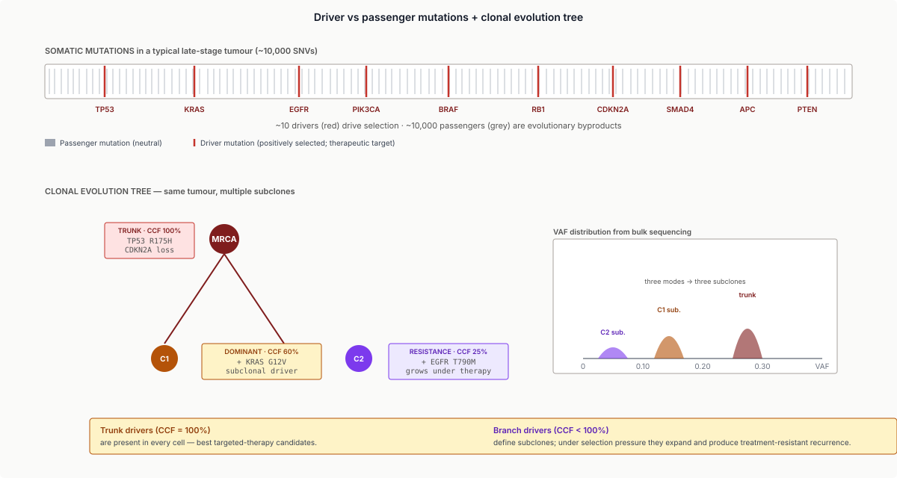
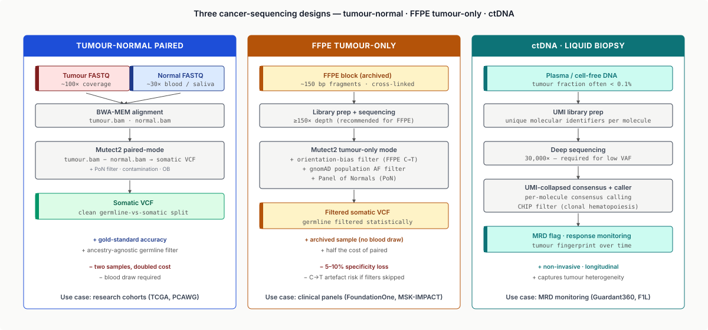
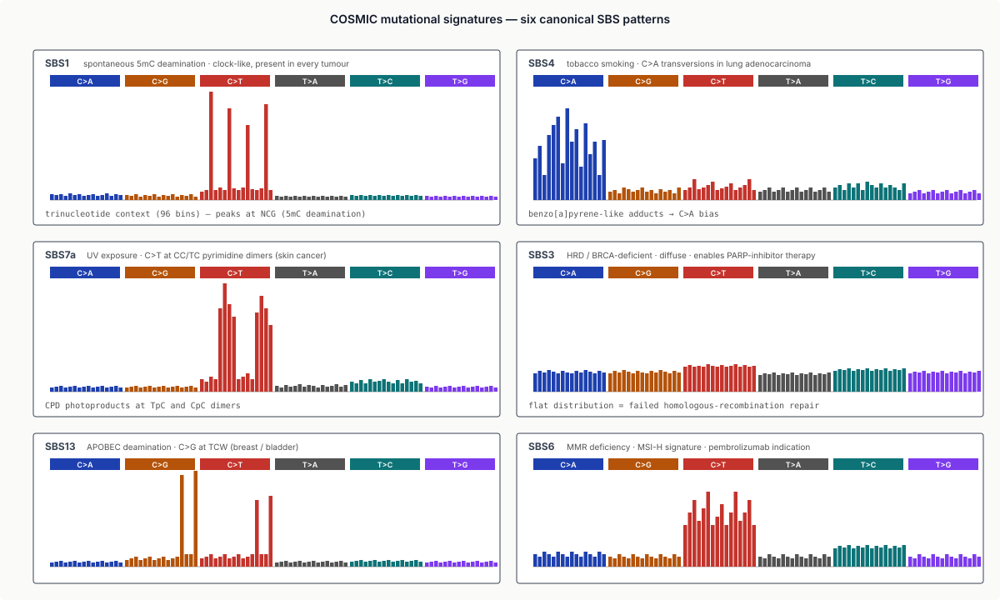
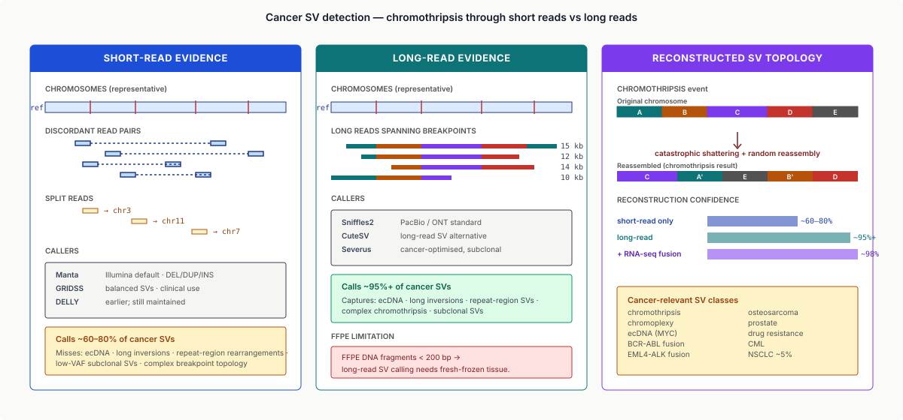
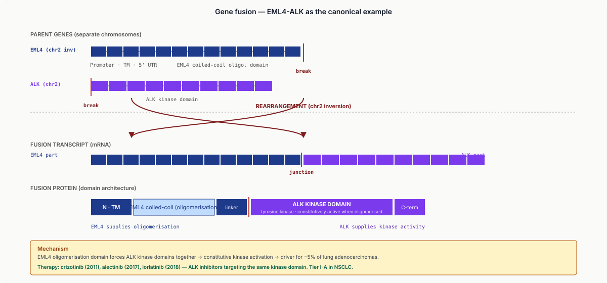
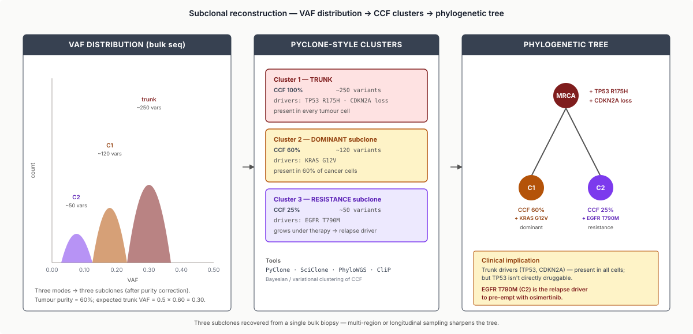
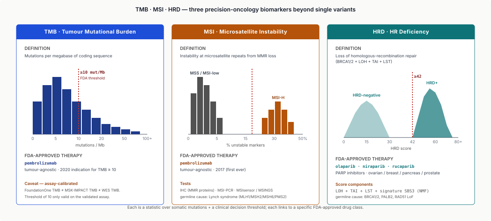
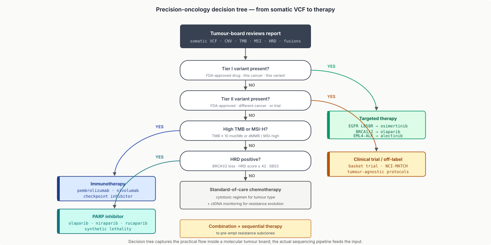

Eight moves: read the hallmarks, pick the design, call somatic carefully, decompose signatures, resolve SVs and fusions, reconstruct subclones, tier with AMP/ASCO/CAP, match drug to driver.
Learning objectives
- Describe cancer genomically: hallmarks, driver vs passenger mutations, clonal evolution, and tumour heterogeneity.
- Distinguish the major cancer sequencing designs — tumour-only vs tumour-normal; FFPE vs fresh-frozen; ctDNA (liquid biopsy); clinical panels (FoundationOne, MSK-IMPACT) vs WES vs WGS — and pick the right one per clinical use case.
- Run a somatic variant-calling analysis with Mutect2 / Strelka2, recognising and mitigating low-VAF subclonal calls, FFPE deamination artefacts, and contamination.
- Interpret mutational signatures (COSMIC SBS catalogue) to infer mutagenic etiology (UV, tobacco, APOBEC, MMR-deficiency, HRD, etc.).
- Detect and interpret cancer-specific structural variants and gene fusions with short-read, long-read, and RNA-based tools.
- Reconstruct subclonal structure (PyClone-style) and interpret phylogenetic trees of tumour evolution.
- Apply the AMP/ASCO/CAP tier system to somatic variants (Tier I–IV); use OncoKB / CIViC / TMB / MSI / HRD scoring.
- Trace the decision flow in a tumour board: sequencing → biomarkers → targeted therapy / immunotherapy / PARP inhibitors. Understand industry roles a graduating EE student may occupy.
Part 1 · 25 min What Cancer Is, Genomically
1.1 The capstone framing
Cancer is the integrative case study for this course because it touches every prior lecture:
- L1: FFPE tissue preservation produces sequence artefacts that every cancer pipeline must handle.
- L2–L4: somatic variant calling extends L4's germline framework with paired-sample designs and low-VAF subclonal considerations.
- L5–L6: tumour RNA-seq reveals fusion transcripts and expression subtypes.
- L7–L8: single-cell tumour genomics resolves clonal heterogeneity and tumour-microenvironment cell states.
- L9–L10: cancer hijacks epigenetic regulation; methylation and chromatin accessibility change systematically.
- L11: long-read sequencing resolves complex structural variants that short reads miss.
- L12–L13: germline cancer-risk alleles (BRCA1/2, Lynch syndrome) use the L12 pop-gen + L13 GWAS / fine-mapping framework.
- L14: clinical pipeline reproducibility is non-optional in oncology.
- L15: drug-target structure informs inhibitor design (most kinase drugs are AlphaFold-era structure-based).
- L16: ML models increasingly drive cancer genomic analyses (tumour-normal calling, signature decomposition, response prediction).
- L17: clinical variant interpretation, with AMP/ASCO/CAP rules extending the ACMG/AMP framework to somatic variants.
This lecture pulls the threads together with cancer as the applied problem.
1.2 Hallmarks of cancer
Cancer is not a single disease. It's the shared endpoint of many failures in how cells regulate themselves. Hanahan & Weinberg's Hallmarks (2000, updated 2011 and 2022) organise these failures into ~10–14 capabilities that cancer cells acquire:
- Sustaining proliferative signalling (constitutively active growth signals).
- Evading growth suppressors (loss of p53, Rb).
- Resisting cell death (apoptosis evasion).
- Enabling replicative immortality (telomerase activation).
- Inducing angiogenesis (new blood-vessel growth).
- Activating invasion and metastasis.
- Reprogramming energy metabolism (Warburg effect).
- Evading immune destruction.
- Genome instability — the meta-hallmark; enables all the others.
- Tumour-promoting inflammation.
- Phenotypic plasticity (added 2022).
- Senescent cells (added 2022).
- Non-mutational epigenetic reprogramming (added 2022).
- Polymorphic microbiomes (added 2022).
Each hallmark is a biological capability; each is enabled by specific molecular alterations (mutations, structural variants, epigenetic changes, expression changes). The genomic analyses covered in this lecture aim to identify which hallmarks are active in a given tumour and which molecular alterations drive them.
![Central cancer cell with disorganised chromatin surrounded by 14 labelled spokes for the hallmarks of cancer: sustained proliferation, evading growth suppressors, resisting cell death, replicative immortality, angiogenesis, invasion/metastasis, energy reprogramming, immune evasion, genome instability, tumour-promoting inflammation, phenotypic plasticity, senescent cells, non-mutational epigenetic reprogramming, polymorphic microbiomes. Each spoke annotated with an example molecular alteration (e.g. RAS/RAF/MEK for proliferative signalling, p53/Rb loss for growth-suppressor evasion). Original 2000 hallmarks vs 2011 vs 2022 additions colour-coded.](../diagrams/lecture-18/01-hallmarks.svg)
1.3 Driver vs passenger mutations
A typical tumour genome carries ~1,000–100,000 somatic mutations (wide range by cancer type — pancreatic tumours have few, melanoma has many). Of these, only a handful (typically 5–15) are drivers — mutations that conferred a selective advantage to the cell lineage during tumour evolution.
- Drivers: positively-selected during tumourigenesis. Typically in known cancer genes (KRAS, TP53, EGFR, PIK3CA). Targeting drivers is the basis of most modern cancer therapy.
- Passengers: neutral with respect to fitness. They occurred in the cell but didn't contribute to the selection. Most mutations are passengers.
Distinguishing drivers from passengers is one of cancer genomics' core tasks. Methods:
- Recurrence-based: a mutation seen in many patients' tumours is likely a driver. COSMIC Census + TCGA + cBioPortal.
- Function-based: mutation in a known cancer-gene hotspot (e.g. BRAF V600E, KRAS G12X) — strong driver signal.
- Statistical: MutSig, OncodriveFML, dN/dS — identify genes mutated more than expected by chance.
- Experimental: functional assays (CRISPR screens, MAVE) validate candidate drivers.
1.4 Clonal evolution
Cancers evolve via repeated rounds of selection. A small population of cells accumulates mutations; those with advantageous mutations outgrow their neighbours; a new mutation appears in a descendant; repeat. The tumour becomes a mixture of subclones — groups of cells sharing common ancestry and mutation set.
Practical consequence: a single tumour biopsy at diagnosis contains cells from multiple subclones. Therapy typically selects against the dominant clone but leaves resistant subclones; these regrow as treatment-resistant recurrence. Every late-stage cancer therapy decision is shaped by this evolutionary dynamic.

1.5 Genome instability
The ability to accumulate mutations rapidly is itself a hallmark: genome instability. Mechanisms:
- Point mutations — from replication errors, DNA damage (UV, tobacco smoke, oxidative stress, spontaneous deamination).
- Microsatellite instability (MSI) — loss of mismatch repair (MLH1, MSH2, MSH6, PMS2 gene loss). Short repeats gain/lose units fast. Diagnostic biomarker for immunotherapy response.
- Chromosomal instability (CIN) — whole-chromosome gains/losses. Common in solid tumours.
- Homologous recombination deficiency (HRD) — loss of BRCA1/2, PALB2, or related. Leads to specific mutational signatures and PARP inhibitor sensitivity.
Genome instability is simultaneously cause and opportunity: more mutations → more drivers acquired, but also → more neoantigens (immunotherapy targets) and more dependencies on alternative repair pathways (synthetic lethality).
Part 2 · 25 min The Cancer Sequencing Landscape
2.1 Tumour-only vs tumour-normal
Tumour-normal paired sequencing (the gold standard):
- Sequence both the tumour sample and a matched normal tissue (blood, saliva, adjacent normal tissue).
- Somatic variants = present in tumour, absent in normal.
- Clean separation of germline (inherited) vs somatic (tumour-acquired) variation.
- Downside: requires two samples, doubles cost.
Tumour-only sequencing (common in clinical practice):
- Only the tumour is sequenced.
- Germline and somatic variation are mixed; need to filter germline statistically (population frequency in gnomAD, known germline variant databases).
- Downside: loses ~5–10% specificity vs paired tumour-normal; occasional false-positive drivers that are actually germline.
- Upside: half the cost, fewer samples to collect (no need for blood draw when archival FFPE is all that's available).
Clinical practice:
- Commercial panels (FoundationOne, MSK-IMPACT) often run tumour-only with sophisticated germline filtering.
- Research and academic cohort studies (TCGA, PCAWG) almost always run tumour-normal for rigour.
- New designs use very shallow normal sequencing (5× coverage) as a germline filter — cheap and sufficient.
2.2 FFPE and its artefacts
Most clinical tumour samples are FFPE — formalin-fixed, paraffin-embedded. Stored for years in pathology archives. Cheap; stable; preserves morphology for histology.
The genomics problem: formalin fixation damages DNA. Specific artefacts:
- Cytosine deamination (C→T transitions). Unfixed DNA shows C→T at a low rate; FFPE shows it at a much higher rate, often skewing mutation spectra.
- DNA fragmentation. FFPE DNA is shorter (~150 bp fragments typical); limits long-read utility on archival samples.
- Cross-linking and chemical adducts. Creates sequence errors during library prep.
- Age dependence: a 10-year-old FFPE block has dramatically more damage than a fresh-frozen sample.
Pipelines:
- FFPE-aware callers (Mutect2 with FFPE filtering; specialised steps).
- Orientation-bias filtering (FFPE artefacts are strand-biased).
- Higher per-tumour coverage ($\geq 150\times$ for FFPE; $100\times$ for fresh-frozen) to distinguish real variants from artefacts.
2.3 Liquid biopsy and ctDNA
ctDNA (circulating tumour DNA) is DNA released into the bloodstream by dying tumour cells. Extracted from a blood draw (plasma); sequenced; variants compared to germline. A liquid biopsy.
Advantages:
- Non-invasive: a blood draw vs a tumour biopsy.
- Temporally dynamic: ctDNA can be drawn repeatedly; tumour biopsies cannot.
- Captures tumour heterogeneity: ctDNA is a mixture of DNA from all tumour sites (primary + metastases).
- Sensitive to minimal residual disease (MRD): after surgery, persistent ctDNA indicates microscopic residual tumour cells → high relapse risk.
Challenges:
- Low tumour fraction: in early disease, ctDNA is often $< 0.1\%$ of cell-free DNA. Requires very deep sequencing ($30{,}000\times$+) and UMI-based error correction.
- Interpretation: distinguishing true tumour variants from CHIP (clonal hematopoiesis of indeterminate potential — blood-cell-origin clonal mutations present in healthy people) is difficult.
- Regulatory approval: several ctDNA assays are FDA-approved (Guardant360, FoundationOne Liquid).

2.4 Panels vs WES vs WGS
Three scales of cancer sequencing:
- Targeted panels (100–500 cancer genes). $\sim 500\times$ coverage. Fast turnaround. Dominant in clinical care. Examples: FoundationOne CDx (324 genes), MSK-IMPACT (468 genes), TSO500 (523 genes).
- Whole-exome sequencing (WES). $\sim 100\times$ coverage on protein-coding regions (~1% of genome). Broader than panels; research-use common.
- Whole-genome sequencing (WGS). $\sim 60\text{–}100\times$ coverage on the whole genome. Captures non-coding drivers, SVs, copy-number, viral integration. Research-heavy; gaining clinical adoption.
Choice criteria:
- Clinical actionability → targeted panels (covers known actionable genes; high depth for subclonal calling).
- Research / discovery → WES or WGS (captures novel drivers).
- SV detection → WGS (panels miss most SVs).
- Mutational signature inference → WES or WGS (~10k+ mutations needed for stable inference).
- Tumour purity low ($< 20\%$) → high-depth targeted or WES (subclone calling hard at WGS depth).
2.5 The 2025 practical workflow
Most modern clinical tumour sequencing follows a hybrid workflow:
- Panel at diagnosis for actionable targets (fast, cheap, drives treatment).
- WES / WGS in research settings or clinical trials for deeper characterisation.
- ctDNA for monitoring during / after treatment.
Part 3 · 40 min Somatic Variant Calling at Depth
3.1 Why somatic calling is harder than germline
From L4: germline calling uses the assumption that a variant in a diploid individual is present at $\text{VAF} = 50\%$ (heterozygous) or $100\%$ (homozygous). Distributions are narrow; callers can exploit that.
Somatic calling breaks these assumptions:
- Subclonal variants may be present at $\text{VAF} < 10\%$. A variant at $\text{VAF}\,5\%$ is real if it's truly present in a subclone that's $10\%$ of the cells; it's noise if it's sequencing error.
- Tumour purity: a clinical tumour sample is typically 10–60% tumour cells, mixed with normal stroma + immune infiltrate. "100% of tumour cells have a mutation" → VAF at the mutation = $0.5 \times \text{purity}$, not $0.5$. The mean-VAF you expect depends on knowing purity.
- Ploidy changes: tumours gain and lose chromosomes. A variant on a chromosome now present in 3 copies has different expected VAF than diploid.
Tools: Mutect2 (GATK 4, paired-sample); Strelka2 (paired or tumour-only); VarScan2 (legacy); LoFreq (tumour-only with strong noise modelling).
3.2 Mutect2 architecture revisited
Mutect2 (Benjamin et al. 2019, GATK) is the most-used somatic caller. Architecture:
- Local reassembly (inherited from HaplotypeCaller, L4): reconstruct haplotypes from the reads in each region; any variant not on a haplotype is ignored.
- Somatic likelihood: per-read log-likelihood that the read supports the variant allele vs reference, conditioned on possible allele fractions (not just $0.5\,/\,1$).
- Tumour-normal filtering: reject variants with $> 5\%$ allele fraction in the normal.
- Panel of Normals (PoN): an auxiliary "normal" cohort used to filter recurrent artefacts (alignment difficulties, reference bugs). Ideally 40+ samples processed identically.
- Contamination estimation:
CalculateContaminationmodule estimates the cross-sample contamination level in the tumour sample; used to filter marginal calls. - Orientation bias:
FilterByOrientationBiasmodule removes FFPE-like strand-biased artefacts. - Filtering: combine all filters into a
FilterMutectCallsstep producing PASS / FAIL per variant.
![Top-down Mutect2 workflow. Inputs: tumour BAM + normal BAM + Panel-of-Normals + reference. Step 1 local reassembly producing candidate haplotypes. Step 2 per-read likelihood producing raw VCF. Step 3 a series of cancer-specific filters as gates: PoN filter, orientation-bias filter (FFPE), contamination filter, tumour-in-normal filter, low-VAF artefact filter. Output: filtered somatic VCF with PASS/FAIL annotations. Sidebar: cancer-specific filters are where most real-vs-artefact decisions are made.](../diagrams/lecture-18/04-mutect2.svg)
3.3 Low-VAF subclonal detection
The hardest somatic-calling problem: is a $\text{VAF} = 5\%$ call a real subclonal variant or sequencing noise?
Baseline sequencer error rates:
- Illumina: $\sim 0.1\%$ per base. At $\text{VAF}\,1\%$, a read may be error or subclonal.
- Duplex UMI-based sequencing: $\sim 1$ in $10^5$ per base. Enables subclonal calling below $0.1\%$ VAF.
Approaches:
- Depth scaling: $500\times$ tumour coverage can reliably distinguish $\text{VAF}\,5\%$; $10{,}000\times$ is needed for $\text{VAF}\,0.1\%$.
- UMIs (unique molecular identifiers): each original DNA molecule tagged before amplification; duplicates are then collapsed and consensus-called, reducing PCR and sequencer errors. Essential for ctDNA subclonal calling.
- Panel of normals: any recurrent low-VAF variant across the PoN is likely an artefact, not biology.
- Duplex sequencing: read both strands of a molecule; require both to call a variant. Achieves $\sim 10^{-7}$ per-base error floor at the cost of deeper coverage.
Clinical actionability of low-VAF variants:
- $\text{VAF} \geq 5\%$: typically actionable (subclone large enough to be meaningful).
- $\text{VAF}\,1\text{–}5\%$: suspicious; needs confirmation (orthogonal assay) before acting.
- $\text{VAF} < 1\%$: usually not reported; often noise or very minor subclones.
3.4 Mutational signatures (COSMIC SBS catalogue)
Somatic mutations aren't random — they reflect the mutagenic processes that caused them. A tumour's mutation spectrum (the distribution of mutation types across the genome) carries a signature of its causes.
Alexandrov et al. (2013, Nature) established the framework: decompose a tumour's mutation catalogue into a linear combination of mutational signatures, each corresponding to a distinct mutagenic mechanism.
Every mutation has three key properties:
- Substitution type (6 types: C>A, C>G, C>T, T>A, T>C, T>G).
- Flanking bases (the base immediately 5' and 3' of the mutation).
Combined: $6 \times 4 \times 4 = 96$ trinucleotide contexts. Every SNV in a tumour is classified into one of these 96 bins.
A tumour's mutation spectrum is a 96-long vector: counts in each bin. Mutational signatures are 96-long vectors too: the average pattern a given mutagenic process produces.
COSMIC mutational signatures: the community catalogue, ~80 signatures as of 2024 (COSMIC v3.4). Examples:
- SBS1: spontaneous deamination of 5-methylcytosine. Clock-like; present in every tumour.
- SBS2 / SBS13: APOBEC deamination. Common in breast, bladder, cervical, head and neck cancer.
- SBS4: tobacco smoking. C>A in specific contexts.
- SBS5: clock-like; age-related; mixed etiology.
- SBS6 / SBS15 / SBS20 / SBS26: MMR deficiency (microsatellite-unstable tumours).
- SBS7a / SBS7b / SBS7c / SBS7d: UV (sun exposure). Signature of skin cancer.
- SBS10a / SBS10b: POLE mutation (polymerase epsilon mutator phenotype).
- SBS3: HRD / BRCA-deficient. Enables PARP inhibitor therapy.

A C>G C>T T>A T>C T>G. Signatures: SBS1 clock-like right-skewed C>T at NCG, SBS4 smoking-derived C>A peaks, SBS7a UV C>T at CC and TC dimers, SBS3 HRD diffuse flat, SBS13 APOBEC C>G C>T at TCW, SBS6 MMR-deficiency. Each labelled with etiology. Bottom: linear decomposition of tumour spectrum into a sum of these signatures reveals the active mutagenic processes.">3.5 Signature-based actionability
Some signatures carry direct therapeutic implications:
- HRD / SBS3 → PARP inhibitor (olaparib, niraparib) sensitivity. The genomic "HRD score" is increasingly used as a clinical biomarker, especially in ovarian and breast cancers.
- MMRD / SBS6+15+20+26 → immune checkpoint inhibitor (pembrolizumab) response. High MSI or dMMR tumours have FDA-approved tumour-agnostic pembrolizumab indication.
- APOBEC / SBS2+13 → potential vulnerability; active research area.
- UV / SBS7 → melanoma; informs biology but doesn't directly change therapy.
Signature analysis is moving from research to clinic — signature-based biomarkers are becoming actionable.
3.6 Worked example flow
A somatic-variant-calling pipeline:
- Align tumour + normal reads (BWA-MEM, L4).
- Mark duplicates (Picard / samtools markdup).
- Run Mutect2 tumour-vs-normal → raw somatic VCF.
- Apply orientation-bias and PoN filters.
- Filter by gnomAD frequency (anything at $> 1\%$ germline is likely germline).
- Annotate with VEP / SnpEff.
- Lookup in COSMIC, OncoKB, CIViC for known clinical relevance.
- Compute mutational signatures via SigProfiler or similar.
- Report Tier I–IV variants (Part 6).
Part 4 · 30 min Structural Variants and Fusions
4.1 Cancer-specific SVs
Cancer is rife with structural variation: deletions, duplications, inversions, translocations, complex rearrangements. Large-scale SVs disrupt tumour-suppressor genes, activate oncogenes, and create fusion proteins (Part 4.3). Specific cancer-driver SV mechanisms:
- Chromothripsis: catastrophic shattering of a chromosome; the pieces reassemble in random order. Common in osteosarcoma, Li-Fraumeni-associated cancers. Dozens of SVs in a single event.
- Chromoplexy: multi-chromosome rearrangement. Common in prostate cancer.
- Chromoanasynthesis: chromosome amplification with variable copy-number.
- Extra-chromosomal DNA (ecDNA): circular DNA containing oncogenes (e.g. MYC) amplified to 50–100 copies. Drives drug resistance. First characterised in detail ~2017+.
4.2 SV detection from short vs long reads
SV detection tools differ drastically by read technology:
Short-read tools:
- Manta (Chen et al. 2016). Illumina standard. Good for deletions, small insertions, tandem duplications. Misses complex SVs.
- GRIDSS (Cameron et al. 2017). More sensitive on balanced SVs (inversions, translocations). Used in clinical pipelines (LINX for structural annotation).
- DELLY (Rausch et al. 2012). Earlier tool; still used.
Long-read tools (callback to L11):
- Sniffles2 (Smolka et al. 2024). De facto standard for PacBio / ONT.
- CuteSV.
- Severus (Broad, 2024). Cancer-optimised; handles subclonal SVs better.
Long reads dominate for cancer SV detection: ecDNA, large inversions, complex repeat-region rearrangements all favour long-read resolution.

4.3 Gene fusions from RNA-seq
A gene fusion is two genes joined into a single transcript by a structural rearrangement. Fusion proteins can have oncogenic function not possessed by either parent gene.
Canonical examples:
- BCR-ABL1 (chronic myeloid leukaemia). Philadelphia chromosome translocation $t(9;22)$. Activates ABL1 kinase. Treatable with imatinib / nilotinib / dasatinib — the paradigm of targeted cancer therapy.
- EML4-ALK (lung adenocarcinoma). ~5% of lung adenocarcinomas. Activates ALK kinase. Treatable with crizotinib / alectinib.
- TMPRSS2-ERG (prostate cancer). Not directly actionable (yet).
- NTRK fusions (multiple cancers). Rare but cross-tumour. Treatable with larotrectinib (FDA-approved for any NTRK-fusion-positive solid tumour).
- FGFR fusions (cholangiocarcinoma, bladder). Treatable with FGFR inhibitors.
Detection methods:
- RNA-seq-based: STAR-Fusion, Arriba, FusionCatcher, JAFFA. Identify chimeric reads spanning two genes' transcripts.
- DNA-based SV callers: detect the underlying chromosomal rearrangement. More sensitive for breakpoints but miss fusions that are promoter-activating without breakpoints in coding regions.
- Hybrid approach: integrate RNA + DNA for the highest confidence.
Arriba (Uhrig et al. 2021) is currently the standard for clinical RNA-seq fusion calling. It's fast, has a curated list of known cancer fusions, and separates high-confidence from low-confidence calls.

4.4 Copy-number variants
Cancer genomes often have large copy-number changes — chromosome arms lost, oncogenes amplified to 10–100 copies, whole-genome doubling events.
- CNVkit, Sequenza, PureCN, ASCAT, TitanCNA: CNV callers for cancer. Estimate tumour purity + ploidy + per-segment copy-number.
- Facets: another popular tool, especially in oncology-heavy labs.
Key clinical CNVs:
- HER2 amplification in breast cancer → trastuzumab (Herceptin) therapy. Canonical precision-oncology biomarker.
- MYC amplification in various cancers → ecDNA-resident amplifications; potential drug targets.
- CDKN2A loss in many cancers → disables a tumour-suppressor pathway.
- EGFR amplification in glioblastoma and lung cancer.
CNV calling in FFPE is famously noisy; fresh-frozen samples give cleaner calls.
4.5 Integrated SV analysis
Modern cancer-SV pipelines integrate multiple signals:
- Short-read SV caller (Manta / GRIDSS) → breakpoint candidates.
- Read-depth caller (CNVkit / Sequenza) → CNV landscape.
- RNA-seq fusion caller (Arriba) → functional fusion validation.
- Long-read caller (Sniffles2) where available → complex SV resolution.
- Integrated annotation (LINX, jaBBA) → structural event reconstruction + driver annotation.
Part 5 · 25 min Tumour Heterogeneity, Clonal Evolution
5.1 Subclonal architecture
Every late-stage tumour is a mixture of subclones. Reconstructing that mixture from bulk sequencing is the subclonal deconvolution problem.
Key observations:
- Clonal variants (present in 100% of tumour cells): $\text{VAF} = \text{purity}/2$ in diploid regions. Typically the earliest drivers.
- Subclonal variants (present in a fraction of tumour cells): VAF less than clonal VAF. Later events.
- Cancer cell fraction (CCF): adjusted VAF that accounts for tumour purity, ploidy, and copy-number — the fraction of tumour cells carrying the variant.
Reconstruction:
- PyClone (Roth et al. 2014): Bayesian clustering of variants by CCF across multiple samples of the same patient.
- SciClone (Miller et al. 2014): similar; variational inference.
- PhyloWGS (Deshwar et al. 2015): also reconstructs the phylogenetic tree.
- CliP (2021+): improved clustering performance.
The output: clusters of variants, each at a shared CCF, representing distinct subclones. Combined with phylogenetics, produces an evolutionary tree of the tumour.
5.2 Phylogenetic reconstruction
Given subclone clusters from multiple time points or multi-site biopsies:
- Build a tree relating subclones.
- Root = MRCA (clonal ancestor).
- Internal nodes = subclonal branching events.
- Leaves = current subclones present in the tumour.
Tools: LICHeE, MEDICC2, SPRUCE, CONIPHER. Outputs an evolutionary tree annotating which mutations / CNVs / SVs defined each branch.
Clinical value:
- Understand treatment-resistance evolution: which subclone survived; what mutations defined it; how to target it.
- Identify early (trunk) vs late (branch) drivers: trunk drivers are present in all cells, best targeted-therapy candidates.

5.3 Single-cell tumour genomics
Bulk sequencing averages across cells. Single-cell sequencing (L8) resolves individual cells directly, avoiding the deconvolution problem.
Cancer-specific single-cell approaches:
- scRNA-seq (10× Chromium, Smart-seq): expression profiles per tumour cell. Reveals cell-type heterogeneity, tumour-microenvironment cells, treatment-response states.
- scDNA-seq (10× Chromium CNV): single-cell copy-number profiles.
- scATAC-seq: chromatin accessibility per cell; reveals epigenetic heterogeneity.
- Multi-modal single-cell: CITE-seq, spatial transcriptomics (Visium, Xenium).
Single-cell tumour analyses:
- Identify distinct tumour-cell states (cycling vs quiescent; stem-like vs differentiated).
- Characterise tumour-microenvironment (T cells, macrophages, fibroblasts, endothelial).
- Trajectory analysis from L8: infer differentiation or treatment-response dynamics.
- Cell-type proportions inform immune-status and therapy decisions.
5.4 Tumour microenvironment (TME)
A tumour isn't just tumour cells. It's tumour + stroma + immune cells + vasculature. The tumour microenvironment determines:
- Whether immunotherapy works (T cell infiltration density).
- How aggressive the tumour is (tumour-associated macrophage phenotype).
- Metastatic potential (fibroblast-driven ECM remodelling).
Single-cell and spatial genomics are the dominant tools for TME characterisation. Cell2Location, CIBERSORTx, xCell deconvolve bulk RNA-seq into cell-type proportions.
5.5 Implications for therapy
Heterogeneity matters clinically:
- Targeting a trunk driver (present in all cells): effective but rarely sufficient for cure because subclones still diversify.
- Combination therapy: target multiple pathways to prevent resistance emergence.
- Liquid biopsy monitoring: track subclonal dynamics during treatment via ctDNA.
- Adaptive trials: adjust therapy based on evolving resistance.
Part 6 · 30 min Clinical Interpretation in Oncology
6.1 AMP/ASCO/CAP tier system
Lecture 17's ACMG/AMP framework classifies germline variants (inherited). Somatic variants in cancer use a different framework: the AMP/ASCO/CAP joint guidelines (Li et al. 2017, J Mol Diagn).
Four tiers:
- Tier I — Variants of strong clinical significance. FDA-approved drug for this variant in this cancer type; included in professional guidelines (NCCN).
- Tier II — Variants of potential clinical significance. FDA-approved drug for this variant in a different cancer type, or drugs in clinical trials, or preclinical strong evidence.
- Tier III — Variants of unknown clinical significance. In a cancer gene, but no therapeutic implication.
- Tier IV — Benign or likely benign variants. Known germline or passenger; no clinical relevance.
Level of evidence per tier subdivides further:
- Tier I-A: FDA-approved therapy, this cancer type, this variant.
- Tier I-B: Professional-guidelines-recommended therapy.
- Tier II-C: FDA-approved therapy for different cancer type.
- Tier II-D: Clinical trials, case reports.
The framework is deliberately therapy-centric: the tier tells you what to do with the variant (treat with drug X, consider clinical trial Y, no action).
![Four horizontal tiers stacked by clinical actionability. Tier I in green: FDA-approved therapy, example EGFR L858R in NSCLC → erlotinib. Tier II in amber-light: potential clinical significance, example BRAF V600E in non-melanoma tumour. Tier III in grey: unknown significance, example PIK3CA rare missense outside hotspots. Tier IV in muted grey: benign / passenger, example common polymorphism. Annotation: contrast with ACMG/AMP germline that classifies by pathogenicity; this classifies by clinical action.](../diagrams/lecture-18/09-amp-asco-cap.svg)
6.2 OncoKB, CIViC, ClinGen somatic
Three dominant knowledge bases inform oncology variant tiering:
- OncoKB (Memorial Sloan Kettering). Curated precision-oncology database. FDA-recognised for variant annotation. Levels 1 (FDA-approved) → 4 (compelling biological evidence) matching AMP/ASCO/CAP tiers.
- CIViC (civicdb.org). Open-source, crowd-curated. Similar level scheme (A–D).
- ClinGen Somatic Cancer Variant Curation (relatively newer). Formal expert-panel classifications.
A clinical variant scientist typically:
- Queries OncoKB + CIViC for known annotations.
- Checks FDA labels for the relevant drug-gene-cancer combinations.
- Reviews NCCN guidelines (National Comprehensive Cancer Network).
- Applies the AMP/ASCO/CAP tier + level of evidence.
- Writes the clinical report.
Several commercial tools (VarSome, QIAGEN QCI, Genomic Interpretation Engines) aggregate this machinery; most commercial clinical panels use their own proprietary aggregators that reproduce most of OncoKB/CIViC internally.
6.3 Tumour Mutational Burden (TMB)
TMB: the number of somatic mutations per megabase of coding sequence. A signature-of-signatures biomarker — captures overall mutational load without decomposing.
High TMB ≈ many mutations = many neoantigens (mutated protein fragments visible to T cells) = more likely to respond to immune checkpoint inhibitor (ICI) therapy (pembrolizumab, nivolumab).
FDA-approved TMB thresholds:
- $\text{TMB} \geq 10$ mutations / Mb → pembrolizumab indication (tumour-agnostic, 2020).
Caveats:
- TMB varies dramatically by assay (panel vs WES vs WGS); FoundationOne TMB ≠ MSK-IMPACT TMB ≠ WES TMB. Each clinical assay has its own FDA-validated threshold.
- TMB doesn't perfectly predict response; it's a probabilistic biomarker.
- TMB low doesn't mean no response; TMB high doesn't mean certain response.
6.4 Microsatellite instability (MSI)
MSI: instability at microsatellite repeats, caused by mismatch-repair deficiency (dMMR). Caused by germline Lynch syndrome (MLH1 / MSH2 / MSH6 / PMS2 loss) or somatic MMR gene inactivation.
MSI-high tumours:
- Specific mutational signature (SBS6 + 15 + 20 + 26).
- High TMB (typically $> 20$ mut/Mb).
- Strong response to ICI (pembrolizumab FDA-approved tumour-agnostic for MSI-H, 2017).
Testing:
- IHC (immunohistochemistry): looks for MMR protein expression loss. Fast; available in most clinical labs.
- MSI-PCR / MSI-NGS: fragment-length analysis at defined microsatellite markers.
- Computational MSI from panel/WES: MSIsensor, MSINGS estimate MSI status from sequencing data.
6.5 Homologous recombination deficiency (HRD)
HRD: inability to repair DNA double-strand breaks via homologous recombination. Caused by germline or somatic BRCA1/2 loss; also by loss of other HR-pathway genes (PALB2, RAD51 variants, etc.).
HRD scoring:
- Genomic HRD score: integrates loss-of-heterozygosity (LOH), telomeric-allelic-imbalance (TAI), large-state transitions (LST). Thresholds tune by assay.
- Signature-based HRD (SBS3 + ID6 + SBS8): NMF-inferred from WGS-scale data.
HRD-positive tumours:
- PARP inhibitor sensitivity (olaparib, niraparib, rucaparib). FDA-approved in ovarian, breast, pancreatic, prostate cancers.
- HRD score is a gateway biomarker for trial eligibility and for PARP inhibitor choice.

Part 7 · 25 min From Sequencing to Therapy
7.1 Targeted therapy decisions
The payoff of all the prior machinery: a decision in a tumour board.
Canonical workflow:
- Patient diagnosed with stage-IV cancer; biopsy taken.
- Sample processed (FFPE; tumour-normal panel at a clinical lab).
- Sequencing → somatic VCF + fusion calls + CNV + TMB / MSI / HRD.
- Variant scientist applies AMP/ASCO/CAP → reports Tier I–IV.
- Report delivered to the treating oncologist.
- Molecular tumour board reviews the report; oncologist, pathologist, variant scientist, researcher, clinical-trial-unit representative all present.
- Therapy decision: FDA-approved targeted drug (matching a Tier I variant), clinical trial enrolment (matching a Tier II variant), or standard-of-care chemotherapy if nothing actionable.
Canonical matched drug–gene–cancer triples:
- EGFR L858R / exon-19 deletion in NSCLC → erlotinib / gefitinib / osimertinib.
- EML4-ALK fusion in NSCLC → crizotinib / alectinib / lorlatinib.
- BRAF V600E in melanoma → vemurafenib / dabrafenib + trametinib.
- HER2 amplification in breast cancer → trastuzumab.
- BRCA1/2 loss in ovarian / breast / pancreatic / prostate → olaparib / niraparib.
- KRAS G12C in NSCLC → sotorasib (2021 FDA approval; first KRAS G12C-targeted drug).
- BCR-ABL1 in CML → imatinib / dasatinib / nilotinib.

7.2 Immunotherapy biomarkers
Immune checkpoint inhibitor (ICI) therapy doesn't target a specific variant. It unblocks T-cell-mediated tumour killing. Response depends on:
- $\text{TMB} \geq 10$ mut/Mb → pembrolizumab indication.
- MSI-H / dMMR → pembrolizumab (tumour-agnostic, 2017).
- PD-L1 expression (by immunohistochemistry, not genomics) → specific checkpoint-inhibitor indications.
- Tumour-infiltrating lymphocytes (TILs) → qualitative indicator of active immune response.
PD-L1 is measured on tumour cells by IHC; TIL by histology. Genomics adds TMB + MSI + neoantigen prediction but doesn't replace immunohistochemistry — they're complementary.
7.3 Emerging therapies
Beyond targeted and immune:
- Antibody-drug conjugates (ADCs): antibody (targeting tumour antigen) + toxic payload. Trastuzumab-deruxtecan (HER2 ADC) has been transformative for HER2-low breast cancer.
- Bispecific antibodies: engage T cells + tumour cells simultaneously. Blinatumomab (CD19 × CD3) for leukaemia; teclistamab for multiple myeloma.
- CAR-T cell therapy: patient's T cells engineered to express a tumour-targeting receptor. FDA-approved for several leukaemias / lymphomas; working on solid tumours.
- Therapeutic vaccines: patient-specific neoantigen vaccines in trials. mRNA platforms (Moderna / BioNTech) now being used.
Genomics is critical for neoantigen identification (for vaccines and CAR-T target selection) and for patient stratification (for ADC + bispecific targeting).
7.4 Drug discovery + AlphaFold
Cancer drug discovery is increasingly structure-based (callback to L15):
- Predict protein structure with AlphaFold2/3.
- Identify druggable pockets.
- Virtual screen small-molecule libraries.
- Optimise binding with structure-based medicinal chemistry.
For example: the 2021 FDA approval of sotorasib (KRAS G12C inhibitor) came after decades of KRAS being called "undruggable." Structure-based design identified a cryptic binding pocket unique to the G12C mutant form, enabling selective targeting. AlphaFold-era tools accelerate this pattern.
7.5 Resistance and combinations
Single-drug targeted therapy fails over time due to resistant subclones (Part 1.4). Modern clinical practice uses:
- Upfront combinations: dabrafenib + trametinib for BRAF+ melanoma; encorafenib + binimetinib.
- Sequential therapy: first-line targeted drug → on resistance, second-line (often different mechanism).
- ctDNA monitoring: serial liquid biopsies detect resistance mutations early.
- Adaptive designs: clinical trials that switch therapy based on resistance emergence.
Wrap-up
What you should take away
- Cancer is applied evolution. Every concept from population genetics (drift, selection, clonal dynamics, mutation accumulation) applies directly inside a tumour's lifetime.
- Tumour-normal paired sequencing is the gold standard; tumour-only works with careful germline filtering.
- FFPE artefacts are ubiquitous; orientation-bias filtering and high coverage are essential.
- Mutational signatures decompose tumour mutation spectra into mutagenic processes. NMF under the hood. Signatures like HRD / MMRD / UV / APOBEC / tobacco carry therapeutic implications.
- Subclonal reconstruction is blind source separation. PyClone / SciClone cluster variants by cancer-cell-fraction; phylogenetic tools build evolution trees.
- Structural variants and gene fusions are cancer-critical and short-read-challenging. Long reads and RNA-seq complement. Canonical fusions (BCR-ABL, EML4-ALK) are textbook targeted-therapy cases.
- AMP/ASCO/CAP tiering is the oncology-specific classification framework. Tier I: FDA-approved therapy. Tier II: potential (off-label or trial). Tier III: unknown. Tier IV: benign / passenger.
- TMB, MSI, HRD are the three dominant biomarker signatures for beyond-single-variant precision oncology, each linked to specific drug classes.
- The tumour board is the integrating venue: genomics + pathology + clinical oncology + trials unit decide. Your sequencing pipeline feeds one input into that meeting.
The industry view (EE student's path)
Roles a graduating EE student may occupy:
- Clinical bioinformatics engineer at a commercial clinical lab (Foundation Medicine, Guardant, Tempus, Natera). Build and maintain clinical pipelines under regulatory constraint.
- Computational biologist at pharma / biotech (Genentech, Roche, Novartis, Pfizer, Moderna). Identify biomarkers, support clinical trials, inform drug development.
- ML engineer at a genomics-focused startup. Build models that predict therapy response, decompose mutational signatures, or integrate multi-modal data.
- Academic core facility bioinformatician. Develop pipelines for specific research groups.
- Translational research scientist at a cancer centre (MSK, Dana-Farber, MD Anderson). Bridge bench science and clinical care.
Skills that matter regardless of role:
- Fluency with the pipeline stack (L14): FASTQ → BAM → VCF; Nextflow / Snakemake; GATK / BWA / DeepVariant.
- Understanding of statistical genetics + ML (L13, L16).
- Regulatory literacy (L17 + L18 Part 2) — increasingly required.
- Domain literacy: know what a "Tier I EGFR L858R" means to a clinician.
- Communication: writing reports that both a clinician and a reviewer can understand.
![Landscape diagram with four quadrants. Clinical labs (Foundation Medicine, Guardant, Tempus, Natera, Invitae-oncology). Pharma/biotech (Roche, Novartis, AstraZeneca, Moderna, mid-size biotechs). Sequencing/platform companies (Illumina, PacBio, ONT, 10× Genomics). Academic cancer centres (MSK, Dana-Farber, MD Anderson, Broad, Sanger). Each quadrant lists typical bioinformatics roles: pipeline engineer, ML engineer, computational biologist, translational scientist. Centre: the cancer-genomics graduate's career paths often cycle between these. Bottom: hybrid roles (clinical + research + ML) are increasingly the norm.](../diagrams/lecture-18/12-industry-ecosystem.svg)
Final pointers to keep learning
- TCGA Pan-Cancer Atlas: cancer.gov/ccg/research/genome-sequencing/tcga. ~11,000 tumours across 33 cancer types with genomic + clinical data. Foundational dataset.
- PCAWG: docs.icgc-argo.org/docs/pcawg. Pan-Cancer Analysis of Whole Genomes. 2,800 WGS tumours.
- COSMIC: cancer.sanger.ac.uk/cosmic. Mutation catalogue; mutational signatures.
- cBioPortal: cbioportal.org. Interactive cancer genomics visualisation.
- OncoKB, CIViC: precision-oncology knowledge bases.
- ASCO, AACR, ESMO annual meetings: follow the clinical trial readouts.
- NCCN guidelines: the clinical-practice standard, updated continuously.
- Biorxiv / Medrxiv: preprints in cancer genomics land first here.
Capstone exercise
Build a tumour-normal somatic pipeline in Nextflow (L14) that:
- Takes FASTQ pairs for tumour and normal.
- Aligns with BWA-MEM.
- Calls somatic variants with Mutect2.
- Annotates with VEP.
- Computes TMB + mutational signatures.
- Generates a clinical-style report in Tier I–IV format (AMP/ASCO/CAP).
- Runs on a small public cancer dataset (TCGA or a reduced subset).
- Reproducibly: containerised (Docker / Apptainer), version-pinned references, Nextflow-resumable.
Submission: repository with Nextflow pipeline + containers + reproducibility documentation + an analysis of one sample end-to-end.
Homework
- Download a public tumour-normal pair from TCGA. Run Mutect2 end-to-end with matched PoN filtering. Report number of PASS variants; distribute by VAF.
- From the same VCF, run SigProfilerExtractor (or alternative). Identify the dominant mutational signatures. Hypothesise the tumour's etiology.
- Pick one published cancer genomics paper (e.g. a TCGA sub-project) and reproduce its Figure 1 from scratch. Document any deviations.
- For a Tier I-A variant of your choice (e.g. EGFR L858R in NSCLC), write a one-page clinical-report summary including: the variant; the evidence (citations); the tier; the recommended therapy; the level of evidence.
- Review the 2022 Hanahan hallmarks update. For two of the newer hallmarks (e.g. polymorphic microbiomes, non-mutational epigenetic reprogramming), identify the genomic / sequencing-based assays relevant to each.
Recommended reading
- Hanahan, D., & Weinberg, R. A. (2011). Hallmarks of cancer: the next generation. Cell 144, 646–674. (Updated 2022: Hanahan, D. (2022). Hallmarks of cancer: new dimensions. Cancer Discovery 12, 31–46.)
- Alexandrov, L. B., Nik-Zainal, S., Wedge, D. C., et al. (2013). Signatures of mutational processes in human cancer. Nature 500, 415–421.
- Alexandrov, L. B., Kim, J., Haradhvala, N. J., et al. (2020). The repertoire of mutational signatures in human cancer. Nature 578, 94–101.
- Li, M. M., Datto, M., Duncavage, E. J., et al. (2017). Standards and guidelines for the interpretation and reporting of sequence variants in cancer: a joint consensus recommendation of the AMP, ASCO, and CAP. Journal of Molecular Diagnostics 19, 4–23. (AMP/ASCO/CAP.)
- Campbell, P. J., Getz, G., Korbel, J. O., et al. (2020). Pan-cancer analysis of whole genomes. Nature 578, 82–93. (PCAWG.)
- Benjamin, D., Sato, T., Cibulskis, K., et al. (2019). Calling somatic SNVs and indels with Mutect2. bioRxiv.
- Roth, A., Khattra, J., Yap, D., et al. (2014). PyClone: statistical inference of clonal population structure in cancer. Nature Methods 11, 396–398.
- Turajlic, S., Sottoriva, A., Graham, T., & Swanton, C. (2019). Resolving genetic heterogeneity in cancer. Nature Reviews Genetics 20, 404–416.
- Chakravarty, D., Gao, J., Phillips, S. M., et al. (2017). OncoKB: a precision oncology knowledge base. JCO Precision Oncology 2017.
- Griffith, M., Spies, N. C., Krysiak, K., et al. (2017). CIViC is a community knowledgebase for expert crowdsourcing the clinical interpretation of variants in cancer. Nature Genetics 49, 170–174.
- Uhrig, S., Ellermann, J., Walther, T., et al. (2021). Accurate and efficient detection of gene fusions from RNA sequencing data. Genome Research 31, 448–460. (Arriba.)
- Rustad, E. H., Yellapantula, V. D., Glodzik, D., et al. (2020). mmsig: a fitting approach to accurately identify somatic mutational signatures. Communications Biology 3, 658.
- TCGA portal: portal.gdc.cancer.gov
- cBioPortal: cbioportal.org
- COSMIC mutational signatures: cancer.sanger.ac.uk/signatures
- OncoKB: oncokb.org
- CIViC: civicdb.org
- SigProfilerExtractor: github.com/AlexandrovLab/SigProfilerExtractor
Thank you
You've made it to the end of an 18-lecture course covering sequencing, alignment, variant calling, expression, single-cell, epigenomics, long reads, population genetics, GWAS, data engineering, protein structure, ML in genomics, clinical genomics, and cancer. The field will keep evolving; the frameworks you've learned — matched filtering, detection theory, inductive bias matching, autocorrelation, inverse problems, Bayesian aggregation, diffusion, equivariance — are durable. Go make biology work for people.
Appendix — timing summary
| Block | Time | Cumulative |
|---|---|---|
| Part 1 — What Cancer Is, Genomically | 25 min | 0:25 |
| Part 2 — The Cancer Sequencing Landscape | 25 min | 0:50 |
| Part 3 — Somatic Variant Calling at Depth | 40 min | 1:30 |
| Part 4 — Structural Variants and Fusions | 30 min | 2:00 |
| Part 5 — Tumour Heterogeneity, Clonal Evolution | 25 min | 2:25 |
| Part 6 — Clinical Interpretation in Oncology | 30 min | 2:55 |
| Part 7 — From Sequencing to Therapy | 25 min | 3:20 |
| Wrap-up | 10 min | 3:30 |
Total: ~3h 30min of content.